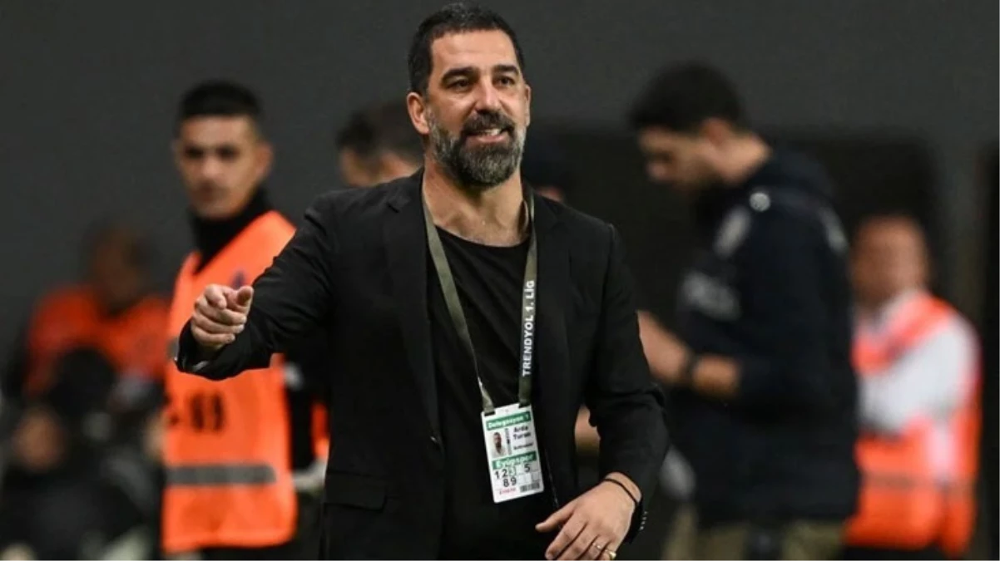

Arda Turan'dan yıllar sonra gelen bomba itiraf: En yanlış olduğum konu
Arda Turan, "Arda Turan Yüzleşme" adlı belgeselde yaptığı hataları ve yaşadığı pişmanlıkları anlattı. Şarkıcı Berkay işe yaşadığı bar kavgası ve ardından hastaneye silahla gittiği olayla ilgili samimi itiraflarda bulunan Arda, "Ama en yanlış olduğum konu, bar kavgası da değil. Hastaneye silahla gitmek. Sen mafya babası mısın? Sana ne oluyor? Kendindeki bu kadar güç zehirlenmesi nedir? Bunların hepsi gerçek doğru" dedi.
Eyüpspor'un teknik direktörü Arda Turan'ın hayatının anlatıldığı belgesel yayına girdi. "Arda Turan Yüzleşme" adıyla yayınlanan belgeselde Arda Turan'ın yaptığı hataları hakkındaki düşüncelerini anlattığı bölüm kısa sürede gündem oldu